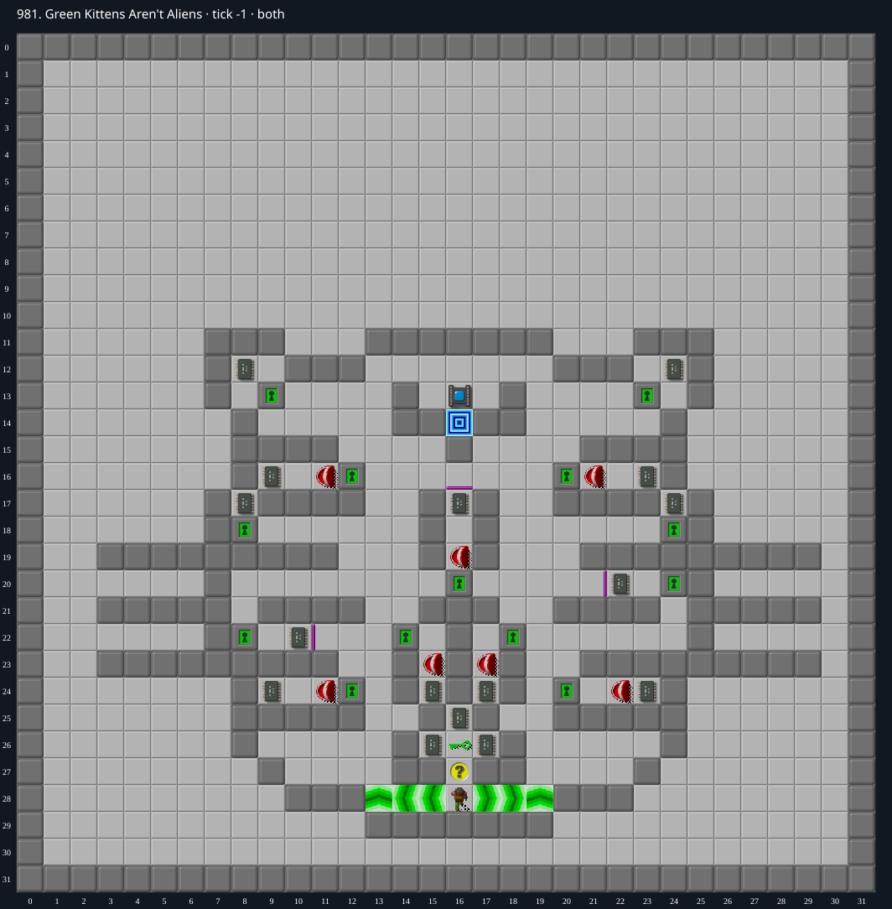

Jacques · Original Tile World MS
981. Green Kittens Aren't Aliens
Verified replayA cardinal-input replay collects all 16 chips and exits at tick 1,784 (89.2 seconds). The web and original Tile World MS engines match exactly through all 1,785 ticks.
16 chips required · 100 second time limit
Verified in both engines. Native Tile World and the web MS engine both completed at tick 1,784 (89.2 seconds), with identical full traces. Verification certificate.
Winning strategy
- Take the reusable green key at (16,26) and the three starting chips. Green doors do not consume this key, so the task is to manage the seven Teeth as each room opens.
- Collect (17,24), then lure the released Teeth against the thin wall at (21,20) while taking (22,20). Use the lower-right loop to take (23,24) and return safely to the inner corridor.
- Clear the eastern rooms next: (24,12), (23,16), and (24,17). Leave the central Teeth behind its door while visiting the western rooms, so it cannot cut off those return paths.
- Collect (9,24) and (10,22). Combine the neighboring upper-left rooms in one visit, taking (8,17) and (9,16); this avoids an extra lure circuit and keeps the route within the 100-second limit.
- Visit the inner-left chip at (15,24), release and evade the central Teeth to collect (16,17), then take the last chip at (8,12). Loop back to the socket at (16,13) and enter the exit immediately south at (16,14).
- The unmodified level completes at tick 1,784 with seed 0 and stepping 0. The 431 recorded moves are cardinal keyboard commands; there are no mouse or diagonal commands. The encoded TWS has identical complete native and web traces.
Inspect both layers
The main map shows the initial runtime state. Switch to the buried layer to inspect hidden terrain and items. Hover coordinates are also available in the downloadable SVG.


Recorded checks and attempts
- visual and rules inspection: Inspected both map layers, green-door/key behavior, thin-wall entry/exit restrictions, and the original half-speed Teeth pursuit order.
- route construction: Used room ordering and deliberate Teeth lures, followed by bounded local route planning. Accepted local paths were replayed against the complete web engine; the final TWS was checked independently against native Tile World.
- winning replay: Both engines completed at tick 1,784 with identical initial state, all 1,785 tick snapshots, and final result; native stderr was empty.
Scope and limitations
- Verified against the original Tile World MS C engine and the production web MS engine. This replay has not been separately tested in Microsoft CHIP.EXE or SuCC.